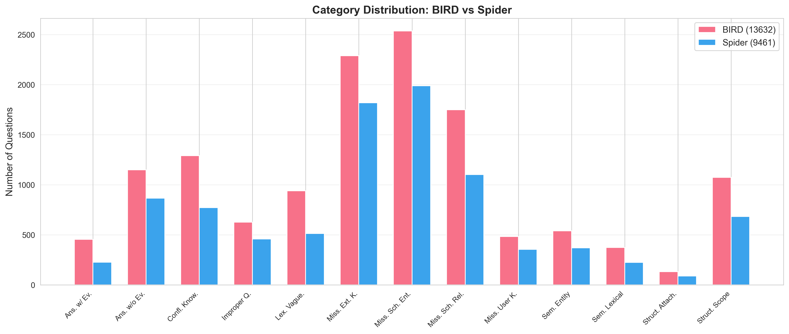
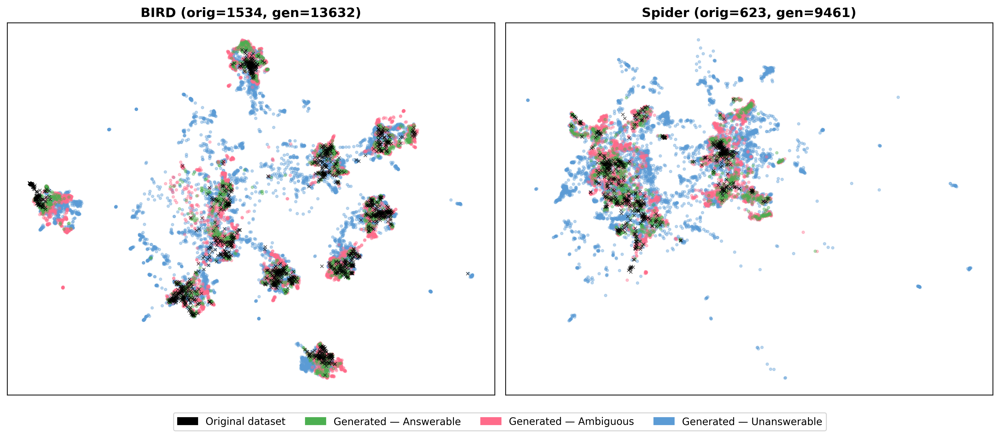
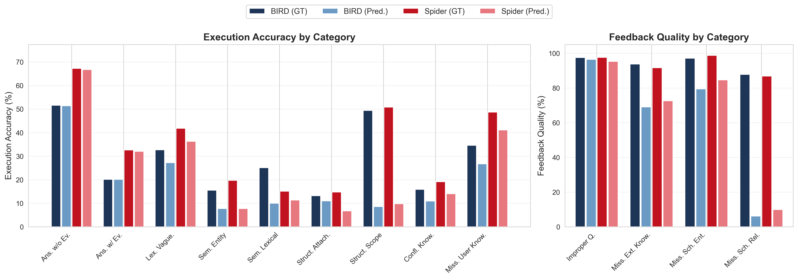

Abstract
Large Language Models (LLMs) demonstrate high performance on curated datasets benchmark for Text-to-SQL systems; nevertheless real-world users frequently pose ambiguous or unanswerable questions that current systems handle poorly. Three interconnected gaps hinder progress: incomplete taxonomies, real-world synthetic benchmark data generation, and static user interaction. We address all of the above issues through three contributions: (1) a unified taxonomy of 8 categories covering ambiguous and unanswerable questions; (2) a multi-agent generation pipeline that produces natural language questions (NLQ) from arbitrary databases validated by using a council of local open-source models; and (3) ABISS (Ambiguity Benchmark using Interaction-Simulated Sessions), a dynamic simulation environment where Text-to-SQL agents interact with style-aware simulated users across multi-turn dialogues. Experiments with seven open-source models (8B to 70B parameters) reveal two bottlenecks: identifying the nature of the user's question, and reliably eliciting disambiguation to incorporate into the correct SQL. Models detect that a question is problematic but struggle to pinpoint the exact issue (5 to 23 percentage-point gap). Furthermore, even when provided with the ground truth category (removing the diagnosis bottleneck entirely), the best execution accuracy only rises to 41.6% on BIRD and 56.0% on Spider, highlighting the current limitations in interactive settings.
Key Contributions
Unified Taxonomy
8 categories with 13 subcategories covering ambiguous and unanswerable questions for knowledge-augmented Text-to-SQL systems.
Generation Pipeline
Multi-agent pipeline producing 23,093 validated questions across 22 databases with 10-stage validation using open-source LLM councils.
ABISS Benchmark
Dynamic multi-turn simulation environment testing 7 open-source models (8B–70B) with style-aware simulated users.
Unified Taxonomy
A comprehensive categorization 8 categories · 13 subcategories
LLMs achieve high performance on curated benchmarks, but real-world users frequently pose ambiguous or unanswerable questions. Existing taxonomies exhibit fragmented coverage: some focus narrowly on specific ambiguity types without addressing unanswerability, others rely on coarse-grained labels that group distinct phenomena.
Our taxonomy introduces explicit categories for Missing User Knowledge (questions requiring user-specific context, e.g. “my department”), Conflicting Knowledge (non-equivalent pieces of evidence in knowledge bases), and distinguishes between schema-level and domain-level knowledge gaps, resulting in a unified framework covering the full spectrum of problematic questions.
We formalize ambiguity as questions mapping to two or more valid SQL interpretations, and unanswerability as questions for which no correct SQL query exists given the schema and knowledge base.
Answerable 1 category
- Without Evidence: Directly answerable from the database schema
- With Evidence: Answerable using provided external evidence
Ambiguous 5 categories
- Scope Ambiguity: Unclear quantifier scope (each, every, all)
- Attachment Ambiguity: Unclear modifier attachment in conjunctions
- Lexical Overlap: Two or more attributes share similar or identical forms
- Entity Ambiguity: Terms map to attributes in different entities
Unanswerable 3 categories
- Missing Entities or Attributes: Required tables or columns absent from schema
- Missing Relationship: No linkage exists between relevant entities
Generation Pipeline


Category-aware generation at scale
Our automated pipeline leverages three open-source LLMs from different families (Qwen2.5-32B, Mistral-Small-24B, and Gemma-3-27B) to produce diverse, high-quality questions. Each question is generated with explicit taxonomic grounding, schema context, and controlled diversity across 6 linguistic styles and 4 difficulty levels.
Each generated question object comprises four fields: the natural language question, evidence, ground truth SQL (for answerable/ambiguous), and hidden knowledge (disambiguation or feedback information).
10-stage validation cascade
A sequential cascade of specialized validators progressively narrows the candidate set, with several stages using majority voting across a council of LLMs:
ABISS Benchmark
Dynamic multi-turn simulation
ABISS is a simulation environment where Text-to-SQL system agents engage in multi-turn dialogues with a style-aware simulated user. Each dialogue follows a two-phase structure:
- Classification Phase (optional): the system predicts the question’s subcategory from the taxonomy
- Interactive Phase: iterative dialogue cycles where the system produces SQL, asks clarifications, or provides feedback for unanswerable questions
The simulated user agent uses a council of LLMs to generate responses matching the original question’s linguistic style. Each clarification is classified as Relevant, Technical, or Irrelevant, with response selection via majority voting and pairwise tournament.
Three evaluation modes
- Ground Truth: system receives the correct category label, isolating interactive capabilities
- Predicted: system uses its own prediction, reflecting realistic deployment
- No Category: system receives only taxonomy definitions, testing default behavior
Evaluation Metrics

Results
Overall evaluation on ABISS-BIRD and ABISS-Spider with seven open-source models. Predicted mode shown with Ground Truth in parentheses. Best results in green.
| Model | Size | ABISS-BIRD | ABISS-Spider | ||||||
|---|---|---|---|---|---|---|---|---|---|
| Rec. | Cls. | EX | FB | Rec. | Cls. | EX | FB | ||
| Llama-3.3-70B | 70B | 67.7 | 57.9 | 28.1 (40.0) | 61.8 (93.0) | 72.5 | 65.3 | 39.8 (51.5) | 70.7 (90.7) |
| Qwen2.5-Coder-32B | 32B | 69.1 | 56.5 | 28.2 (39.0) | 62.3 (90.5) | 72.0 | 59.1 | 38.4 (49.2) | 69.7 (91.0) |
| Qwen2.5-32B | 32B | 68.7 | 63.4 | 29.6 (40.9) | 65.1 (94.1) | 73.3 | 67.5 | 38.0 (49.4) | 72.8 (94.7) |
| Gemma-3-27B | 27B | 62.0 | 45.0 | 23.2 (33.3) | 61.3 (95.0) | 64.7 | 46.5 | 33.2 (44.1) | 68.6 (93.6) |
| Mistral-Small-24B | 24B | 69.1 | 63.7 | 29.9 (41.6) | 65.4 (95.3) | 74.7 | 69.2 | 43.6 (56.0) | 73.9 (95.9) |
| Llama-3.1-8B | 8B | 41.3 | 20.6 | 14.1 (26.2) | 21.5 (89.3) | 42.9 | 20.1 | 21.8 (36.3) | 26.1 (92.0) |
| Qwen2.5-7B | 7B | 59.4 | 41.4 | 18.4 (29.3) | 55.1 (89.9) | 61.5 | 42.4 | 27.3 (39.7) | 59.9 (91.1) |
Citation
@article{Sullutrone2026ABISS,
author = {Sullutrone, Giovanni and Bergamaschi, Sonia},
title = {{ABISS}: Evaluating Text-to-{SQL} Systems Through Agent Interaction},
journal = {Proceedings of the VLDB Endowment},
year = {2026},
volume = {14},
number = {1}
}